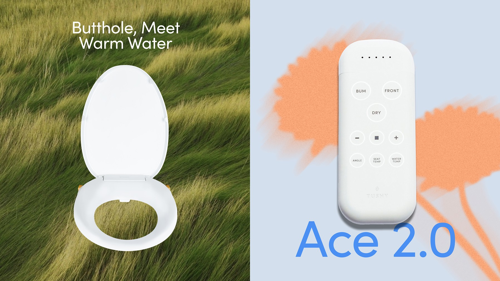
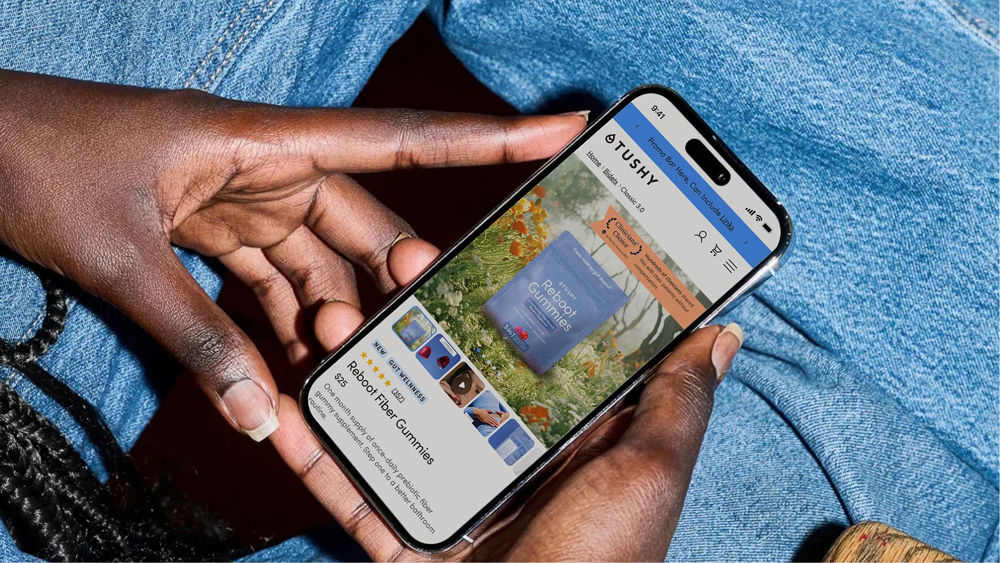
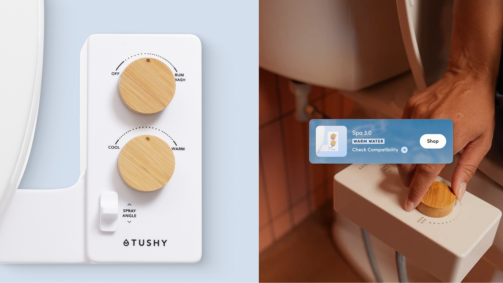

← Back to misc.
Case study assets · Barrel · 2026
Tushy
Design assets I made for Tushy’s case study while at Barrel.
Disclaimer* I did not do the branding or design system for Tushy. I created some fun visual & motion assets for Barrel’s case study, which I wanted to showcase. Full credit goes to the talented designers @ Barrel.


